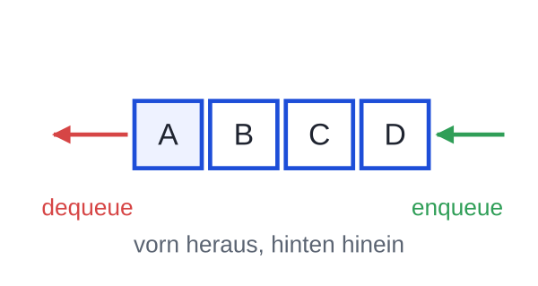

Überblick › LB 2/3 Datenstrukturen
3.2 Schlange (Queue)
An der Supermarktkasse wird bedient, wer zuerst da war. Wer neu kommt, stellt sich hinten an. Diese einfache Regel ist auch in der Informatik eine der wichtigsten Datenstrukturen.
Hinweis: KI als Lernhilfe
Wenn du festhängst: erst den Lernpfad-Schritt und das Video noch einmal ansehen. Wenn du dann eine KI fragst, nutze sie als Lernhilfe, nicht als Lösungsautomat:
- Schick deinen Code und die vollständige Fehlermeldung und schreib dazu, an welcher Aufgabe du arbeitest.
- Keine Namen oder persönlichen Daten in den Chat.
- Bei der Übungs-LK und der LK gibt es keine KI.
Mit einer freien KI (ChatGPT, Gemini, Claude …): Eine KI ohne Anweisung schreibt dir meist sofort die ganze Lösung – dabei lernst du nichts. Stell sie deshalb vorher so ein, dass sie dir beim Selbstlösen hilft:
- ChatGPT: Einstellungen → Personalisierung → „Benutzerdefinierte Anweisungen“, Text unten einfügen. Oder in einem neuen Chat
@studyeintippen (Lernmodus). - Gemini: Seitenleiste → Gems → „Neues Gem“, Text unten als Anweisung einfügen und speichern.
- Claude: Projekte → „Neues Projekt“, Text unten als Projektanweisung einfügen.
- Überall sonst: den Text einfach als erste Nachricht in einen neuen Chat kopieren.
Keine Namen oder Noten eingeben. Diese Anweisung kannst du kopieren:
Ich lerne im Informatik-LK Datenstrukturen in Python: verkettete Liste (Node mit data und next, LinkedList mit head), Schlange (Queue mit head und tail: enqueue, dequeue, peek, is_empty) und Stapel (Stack, oben = head: push, pop, top, is_empty). Hilf mir beim Selbstlösen, nicht mit fertigen Lösungen: - Frag zuerst nach meinem Code und der vollständigen Fehlermeldung. - Hilf in Stufen: Rückfrage, dann Hinweis, dann Zeigerdiagramm in Textform, höchstens 3 Zeilen Code für einen einzelnen Schritt. - Schreib nie eine ganze Methode oder Funktion, auch wenn ich darum bitte. - Keine deque, keine Bibliotheken, keine Einzeiler-Tricks. - Zeig mir bei Fehlern die Zeile und erkläre, was dort passiert, statt meinen Code zu korrigieren. - Spiel meinen Code mit einem Beispiel durch, bevor du sagst, dass er stimmt. - Stell immer nur eine Frage und antworte kurz. - Wenn es läuft: Lass mich erklären, warum, und frag nach einem Testfall für einen Sonderfall.
Schritt 1: Die Idee – FIFO
- FIFO-Prinzip: Das Verhalten ähnelt einer Warteschlange, in der diejenigen, die zuerst ankommen, auch zuerst bedient werden.
- Einsatz: überall dort, wo Aufträge in der Reihenfolge ihres Eintreffens abgearbeitet werden müssen, z. B. Druckaufträge, Anfragen an einen Server oder die Breitensuche in Graphen (siehe Seite 3.8).
Im Video spielst du die Mensa-Warteschlange aus Beispiel 1 als Bild durch. Achte darauf, an welchem Ende hinzugefügt und an welchem entnommen wird.

Kurz geprüft 1: Am Fahrkartenautomaten AFB I
Am Fahrkartenautomaten stellen sich nacheinander Tom, Ida und Max an. Dann wird eine Person bedient, danach stellt sich Lea an. Wer wurde bedient? Wer steht jetzt vorn, wer hinten?
Lösung zeigen
Bedient wurde Tom, denn er kam zuerst (FIFO). Jetzt steht Ida vorn, dahinter Max, ganz hinten Lea.
Weiter mit Schritt 2: Die Klasse ListenQueue →
Schritt 2: Die Klasse ListenQueue
Die einfachste Umsetzung speichert die Wartenden in einer Python-Liste: vorn ist Index 0, hinten ist das Ende. enqueue hängt mit append an, dequeue entnimmt mit pop(0). Die Liste ist ein privates Attribut __daten – von außen wird die Schlange nur über ihre Methoden benutzt. Achte im Video darauf, wie raise eine verständliche Fehlermeldung erzeugt, wenn die Schlange leer ist.
ListenQueue in Thonny (ca. 2 min)Jetzt du – mittippen: Lege 1_listen/listen_queue.py an und tippe den Code aus dem Video ab: die Klasse ListenQueue und die Methoden is_empty, enqueue, dequeue und peek. Starte mit F5 und probiere in der Kommandozeile aus: mensa = ListenQueue() · mensa.enqueue("A"). Danach committen, z. B. 3.2 Schritt 2: ListenQueue, is_empty, enqueue angelegt.
Zum Nachlesen steht derselbe Code mit allen Erklärungen in Beispiel 1:
Kurz geprüft 2: Wozu die Prüfung auf leer? AFB I
Stell dir vor, in peek fehlen die beiden Zeilen mit if self.is_empty() und raise. Was passiert bei ListenQueue().peek()? Was meldet die Methode mit der Prüfung? Probiere beides in Thonny aus.
Lösung zeigen
Ohne Prüfung greift self.__daten[0] auf eine leere Liste zu: IndexError: list index out of range – die Meldung verrät nicht, was eigentlich schiefging. Mit Prüfung erscheint IndexError: peek auf leerer Schlange.
Danach: Aufgabe 3.2.1 – FIFO an einer Folge von Operationen nachvollziehen.
Weiter mit Schritt 3: Warum ist pop(0) langsam? →
Schritt 3: Warum ist pop(0) langsam?
Eine Schlange kann auf verschiedene Arten implementiert werden. Die beiden häufigsten Ansätze sind ein Array und eine verkettete Liste.
1. Implementierung mit einem Array
- Die Elemente liegen hintereinander im Speicher; es wird kein zusätzlicher Speicher für Verweise benötigt.
- Problem: Entfernt man vorn ein Element, müssten alle übrigen um eine Stelle nach vorn rücken – bei einer Python-Liste ist
pop(0)deshalb O(n). - Lösung: ein Ringpuffer mit zwei Indizes für Anfang und Ende, die im Kreis weiterwandern. Damit sind enqueue und dequeue O(1).
- Ist die Kapazität erschöpft, muss in ein größeres Array umkopiert werden (O(n) für diesen einen Schritt).
Im Video siehst du, was bei pop(0) im Speicher passiert (wie beim Einfügen vorn auf Seite 3.0.1), und warum wir deshalb in Video 4 und 5 eine eigene Schlange aus Knoten bauen. Achte darauf, wie viele Elemente bei einem einzigen dequeue rutschen.
pop(0) langsam? (ca. 1,5 min)Kurz geprüft 3: Verschiebungen zählen AFB I
Eine ListenQueue enthält 1000 Elemente. Wie viele Verschiebungen kostet das nächste dequeue? Wie viele sind es ungefähr, bis alle 1000 Elemente entnommen sind?
Lösung zeigen
Ein dequeue lässt die übrigen 999 Elemente nachrücken. Bis die Schlange leer ist: 999 + 998 + … + 1 + 0 = 999 · 1000 / 2 = 499 500 Verschiebungen, also etwa n²/2 – O(n²).
Weiter mit Schritt 4: Queue mit Knoten – enqueue →
Schritt 4: Queue mit Knoten – enqueue
2. Implementierung mit einer verketteten Liste
- Die Schlange merkt sich den ersten Knoten (
head, zum Entnehmen) und den letzten Knoten (tail, zum Einfügen). - enqueue und dequeue sind O(1), es muss nie umkopiert werden; die Schlange wächst knotenweise.
- Nachteil: Jeder Knoten braucht zusätzlichen Speicher für den Verweis, und die Implementierung ist etwas aufwendiger.
Die Klasse Queue aus Beispiel 2 speichert dafür die privaten Attribute __head und __tail. Im Video wird die Mensa-Schlange mit Knoten aufgebaut. Achte auf den Sonderfall der leeren Schlange und darauf, dass __tail nach jedem enqueue auf den neuen Knoten zeigt.
enqueue Schritt für Schritt (ca. 2 min)Jetzt du – mittippen: Lege 1_listen/queue_knoten.py an und tippe den Code aus dem Video ab: die Klassen Node und Queue und die Methoden is_empty und enqueue. Starte mit F5 und probiere in der Kommandozeile aus: mensa = Queue() · mensa.enqueue("A"). Danach committen, z. B. 3.2 Schritt 4: Node, Queue, is_empty angelegt.
Kurz geprüft 4: Welche Verweise ändern sich? AFB I
Die Schlange enthält A → B, __head zeigt auf A, __tail auf B. Welche Verweise ändern sich bei enqueue("C"), und in welcher Reihenfolge?
Lösung zeigen
Zuerst self.__tail.next = neu: Das next von B zeigt auf C. Dann self.__tail = neu: __tail zeigt auf C. __head bleibt bei A. Es wird nichts durchlaufen – O(1).
Weiter mit Schritt 5: Queue mit Knoten – dequeue →
Schritt 5: Queue mit Knoten – dequeue
Beim Entnehmen werden die Daten des vorderen Knotens gemerkt, dann rückt __head auf den Nachfolger – nur ein Verweis wird umgesetzt, also O(1). Achte im Video besonders auf das letzte Element: Wird __head zu None, muss auch __tail zurückgesetzt werden.
dequeue und der Sonderfall beim letzten Element (ca. 2 min)Jetzt du – mittippen: Ergänze in 1_listen/queue_knoten.py den Code aus dem Video: die Methoden dequeue und peek. Starte mit F5, lege die Objekte wie im Video in der Kommandozeile an und probiere dann aus: print(mensa.dequeue()) · print(mensa.peek()). Danach committen, z. B. 3.2 Schritt 5: dequeue, peek ergänzt.
Kurz geprüft 5: Zwei Mal entnehmen AFB I
Die Schlange enthält A → B → C. Es wird zweimal dequeue() aufgerufen. Was wird zurückgegeben? Worauf zeigen __head und __tail danach, und was liefert peek()?
Lösung zeigen
Zurückgegeben werden A und dann B. Danach zeigen __head und __tail beide auf den Knoten C, peek() liefert C.
Hinweis: enqueue und dequeue selbst umhängen
Öffne im Kursmenü links die Seite Zeiger-Werkstatt. Dort gibt es die Übungen „3.2 Schlange: enqueue“ und „3.2 Schlange: dequeue bis leer“. In beiden setzt du __head und __tail selbst um. Die Werkstatt meldet dir, wenn __tail vergessen wurde – auch beim Sonderfall des letzten Elements.
Danach: Aufgabe 3.2.2 – eine Druckwarteschlange mit der Klasse Queue, und Aufgabe 3.2.3 – die Implementierungen bewerten.
Alles zusammen: die Klasse Queue
Hier steht die vollständige Klasse aus den Videos 4 und 5 zum Nachlesen, mit Speicherbild, Kontrolltabelle und Messprogramm. Ganz unten steht ein Ausblick auf die fertige Python-Klasse deque.
Praxisbezug: Druckwarteschlange und Warteschlangen im Netz
Alltag: Schicken mehrere Personen gleichzeitig Dokumente an den Schuldrucker, landen sie in der Druckwarteschlange und werden in der Reihenfolge ihres Eintreffens gedruckt. Auch Ticketsysteme bei Konzertvorverkäufen stellen dich in eine virtuelle Warteschlange.
Beruf: Backend-Entwicklerinnen und -Entwickler koppeln große Systeme über Message Queues (z. B. RabbitMQ oder Kafka): Ein Onlineshop legt jede Bestellung in eine Schlange, und Lager, Rechnungsstellung und Versand holen sie dort nacheinander ab. So geht bei Lastspitzen keine Bestellung verloren.
Die Klasse Queue in anderen Programmen benutzen: import
Ab Aufgabe 3.2.2 schreibst du Programme, die deine Schlange benutzen – die Druckwarteschlange, den Abzählreim, später die Breitensuche (3.6, 3.8). Die Klasse schreibst du dafür nicht jedes Mal neu ab, sondern holst sie mit import aus deiner Datei queue_knoten.py.
Zwei Dateien im selben Ordner 1_listen/:
# Datei queue_knoten.py – Node und Queue wie in Beispiel 2
class Node:
...
class Queue:
...
if __name__ == "__main__": # nur beim direkten Start (F5)
q = Queue()
q.enqueue("Test")
print(q.dequeue()) # Test# Datei druckwarteschlange.py
from queue_knoten import Queue # Datei queue_knoten.py, Klasse Queue
drucker = Queue()
drucker.enqueue("Brief.pdf")
print(drucker.dequeue()) # Brief.pdffrom queue_knoten import Queue: Python sucht die Dateiqueue_knoten.pyim Ordner des Programms, das du startest. Der Dateiname steht ohne.py. Danach benutzt duQueue, als stünde die Klasse in deiner eigenen Datei.Nodemusst du nicht importieren –Queuebenutzt es intern selbst.- Beim
importwird die ganze Datei einmal ausgeführt, von oben nach unten. Klassen und Funktionen werden dabei nur angelegt. Stehen ganz unten aber Testzeilen wieprint(q.dequeue()), laufen sie wirklich mit – deine Testausgaben erscheinen dann plötzlich in der Druckwarteschlange. - Deshalb gehören Testzeilen unter
if __name__ == "__main__":.__name__setzt Python selbst: Startest duqueue_knoten.pymit F5, ist__name__gleich"__main__"und die Tests laufen. Wird die Datei importiert, ist__name__gleich"queue_knoten"– die Tests werden übersprungen. (Dieselbe Regel steht für Testdateien auf Seite 3.0.2.)
| Fehlermeldung | Ursache | Abhilfe |
|---|---|---|
ModuleNotFoundError: No module named 'queue_knoten' | Die Datei liegt nicht im selben Ordner wie dein Programm oder heißt anders. | queue_knoten.py in den Ordner kopieren (z. B. nach 2_baeume/ oder 3_graphen/) oder den Dateinamen prüfen. |
ImportError: cannot import name 'Queue' | In der Datei heißt die Klasse anders (Groß-/Kleinschreibung!). | Klassennamen in beiden Dateien angleichen. |
| Beim Start erscheinen fremde Ausgaben | Testzeilen in queue_knoten.py stehen nicht unter if __name__ == "__main__":. | Testzeilen einrücken und darunter setzen. |
Nenne die Datei nicht queue.py: Python hat schon ein eigenes Modul queue, dann würde das falsche geladen.
Kurz geprüft 6: Was läuft beim Import mit? AFB II
In queue_knoten.py stehen unter den Klassen ohne if __name__ == "__main__": die Zeilen t = Queue(), t.enqueue("Test") und print("Probe:", t.dequeue()). Was gibt druckwarteschlange.py aus dem Beispiel oben aus? Was ändert sich, wenn du die drei Zeilen unter if __name__ == "__main__": einrückst?
Lösung zeigen
Ohne die Bedingung: erst Probe: Test (der Import führt die Testzeilen aus), dann Brief.pdf. Mit der Bedingung nur Brief.pdf – beim Import ist __name__ gleich "queue_knoten", die Testzeilen werden übersprungen. Startest du queue_knoten.py selbst, erscheint Probe: Test weiterhin.
Das Wichtigste
Schlange (Queue): Datenstruktur nach dem FIFO-Prinzip („First In – First Out“): Das Element, das zuerst eingefügt wurde, wird auch zuerst entnommen.
Grundoperationen: enqueue(x) fügt x am Ende ein, dequeue() entfernt das Element am Anfang und gibt es zurück. peek() liefert das vordere Element, ohne es zu entfernen, is_empty() prüft, ob die Schlange leer ist.
Aufwand: Bei geeigneter Umsetzung, z. B. als verkettete Liste mit Verweis auf den ersten und den letzten Knoten, liegen alle Operationen in O(1).
Grundaufgaben
Aufgabe 3.2.1: FIFO nachvollziehen AFB I
Eine leere Schlange erhält die Operationen: enqueue(5), enqueue(8), dequeue(), enqueue(3), enqueue(1), dequeue(), peek(). Gib nach jeder Operation den Inhalt (vorn links) und die Rückgabewerte an.
Aufgabe 3.2.2: Druckwarteschlange simulieren AFB II
Datei: 1_listen/druckwarteschlange.py – neu anlegen; die Klasse Queue holst du mit from queue_knoten import Queue (wie das funktioniert: Abschnitt „import“; Testzeilen in queue_knoten.py unter if __name__ == "__main__":)
Commits: wenn es läuft: 3.2.2: Druckaufträge einreihen und drucken, Seitensumme stimmt
Schreibe mit der Klasse Queue ein Programm, das Druckaufträge aufnimmt. Jeder Auftrag ist ein Objekt einer kleinen Klasse Druckauftrag mit den Attributen name und seiten. Anschließend sollen alle Aufträge nacheinander „gedruckt“ werden; ausgegeben wird jeweils der Name und die bis dahin insgesamt gedruckte Seitenzahl.
Node und Queue bleiben unverändert. Der ganze Druckauftrag kommt als data in den Knoten: drucker.enqueue(Druckauftrag("Brief.pdf", 2)). dequeue() liefert dieses Objekt zurück, dann liest du auftrag.name und auftrag.seiten. So bleibt die Schlange für jeden Inhalt verwendbar – Zahlen, Namen oder Aufträge.
Das kann ich jetzt
Grau steht, was der Lehrplan verlangt, darunter, was das für dieses Thema konkret heißt. Hake einen Punkt ab, wenn er in deinem Hefter zusammengefasst ist und du ihn ohne Hilfe kannst. Wie du ihn zusammenfasst, entscheidest du selbst. Die Haken speichert nur dein Browser.
Lehrplan LB 2 Stapel und Schlange (Kennen von komplexen Datenstrukturen)